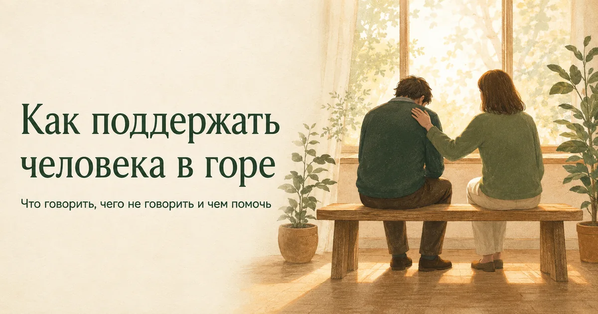
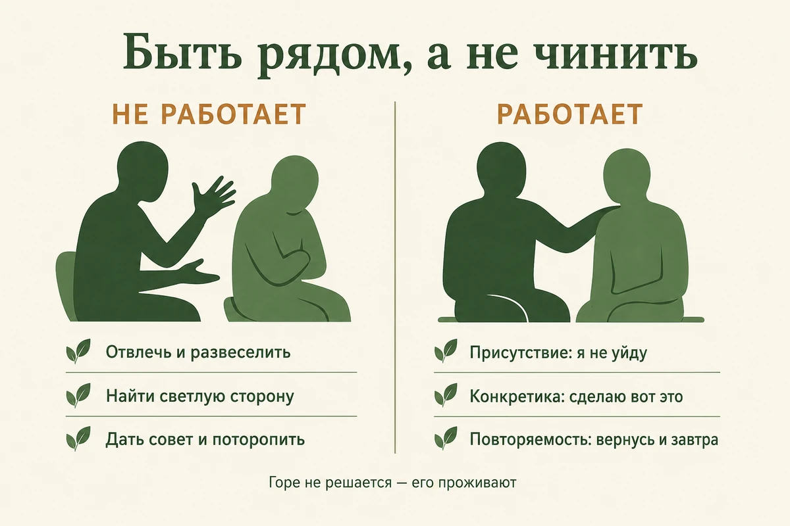
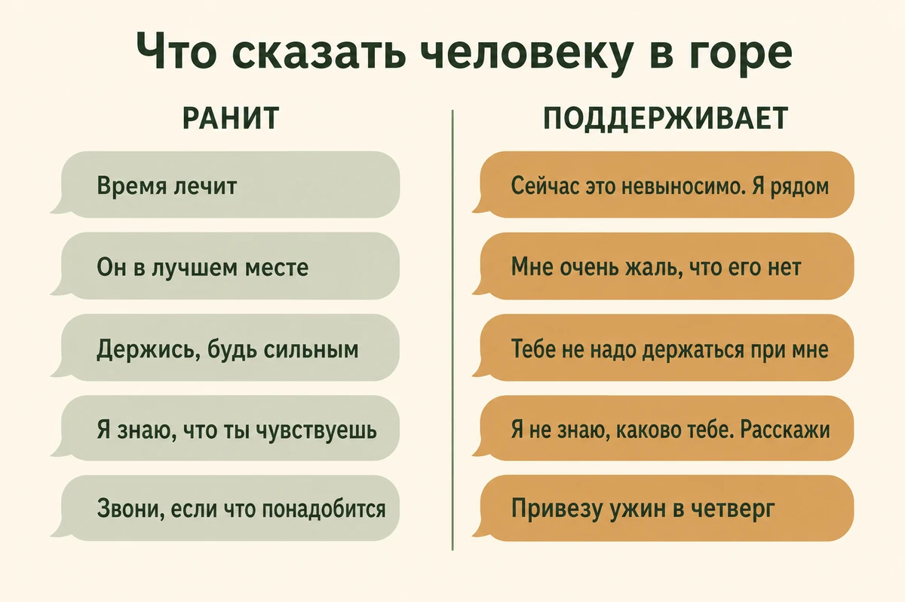
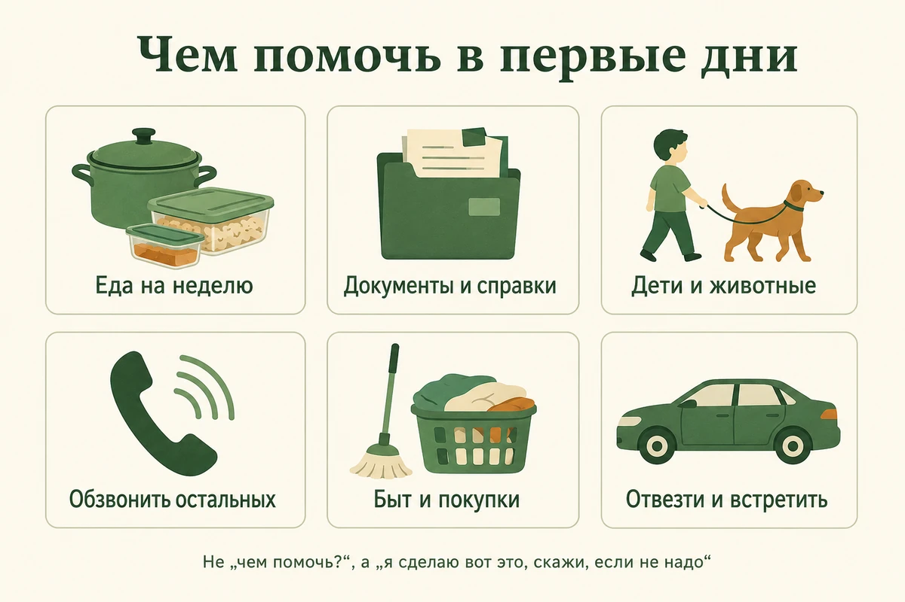
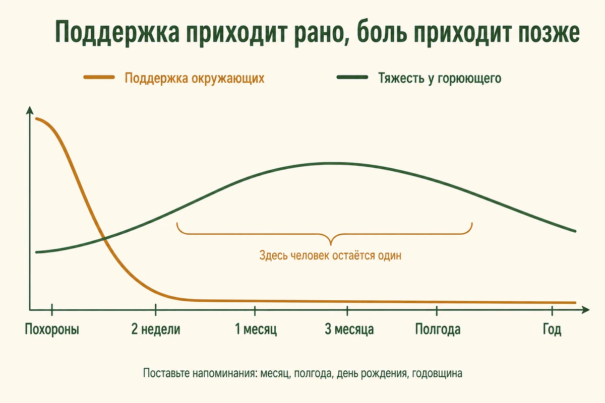
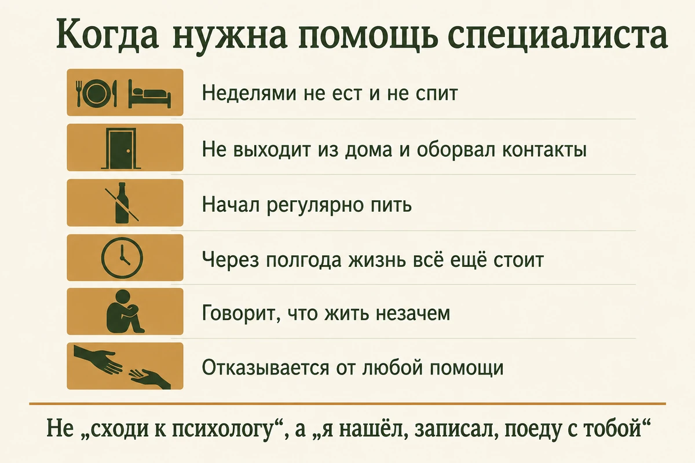

Главная → Блог → Как поддержать человека в горе
Как поддержать человека в горе: что говорить и чего не говорить
Обновлено: 28.08.2026 · 14 минут чтения

Когда у знакомого умирает близкий, большинство людей замирает: сказать что-то банальное страшно, сказать что-то умное — не получается, и в итоге не говорится ничего. Но человеку в горе не нужны правильные слова — ему нужно, чтобы кто-то остался рядом и не исчез. Поддержка складывается из трёх простых вещей: короткого честного сообщения, конкретной помощи делами и готовности возвращаться через месяцы, когда все уже разошлись. Ниже — что написать в первые часы, какие фразы ранят и чем их заменить, как помочь по-настоящему и как вести себя, если горюющий молчит и отталкивает.
- Почему так трудно найти слова
- Главный принцип: быть рядом, а не чинить
- Что написать в первые часы: готовые формулировки
- Что говорить при встрече: 9 фраз, которые работают
- Что сказать, если умерли мама, муж или ребёнок
- Чего не говорить: 12 фраз, которые ранят
- Помощь делами: что нужно в первые дни
- Похороны и первые встречи: как себя вести
- Через месяц, полгода, год: когда все разошлись
- Как поддерживать разных людей
- Особые случаи, где обычные слова не работают
- Когда пора настаивать на помощи
- Как не выгореть, поддерживая
- Частые вопросы
Почему так трудно найти слова
Потому что мы ищем слова, которые уберут боль, а таких слов не существует. Взрослый человек привык быть полезным: если у друга сломалась машина — можно посоветовать сервис, если проблемы на работе — можно обсудить варианты. Смерть не чинится, и от этой беспомощности возникает желание либо сказать что-то «правильное», либо не звонить вообще, пока «не улягутся эмоции».
Вторая причина — страх сделать хуже. «А вдруг напомню?», «вдруг он как раз отвлёкся, а я разбережу?». Этот страх основан на недоразумении: напомнить человеку о смерти близкого невозможно, он помнит о ней каждую минуту. Напомнить можно только о том, что вы есть.
А дальше происходит то, что почти все горюющие описывают одинаково: сразу после похорон вокруг много людей, а через три недели — тишина. Это называют второй потерей: сначала уходит близкий, потом постепенно исчезает окружение, которому стало неловко. Именно поэтому честное «я не знаю, что сказать, но я рядом» обычно оказывается лучше молчания из страха ошибиться.
Если вы читаете это и думаете «я уже всё испортил, промолчал два месяца» — писать не поздно. Сообщение через полгода после потери многие воспринимают не как опоздание, а как редкую ценность: спустя время об умершем вспоминают уже единицы.
Главный принцип: быть рядом, а не чинить
Горе — не задача, у которой есть решение, а процесс, который нужно прожить. Всё, что мы обычно делаем, чтобы помочь — отвлечь, развеселить, найти светлую сторону, дать совет, — на самом деле уменьшает не чужую боль, а нашу собственную тревогу рядом с этой болью. Горюющий обычно считывает это как попытку поскорее убрать неудобные чувства — и замолкает.
Рабочая формула поддержки простая: присутствие + конкретика + повторяемость. Присутствие — вы не сбегаете из разговора и не переводите тему. Конкретика — вы предлагаете реальное дело, а не абстрактную помощь. Повторяемость — вы возвращаетесь снова и снова, а не один раз в неделю похорон.

Самая трудная часть — выдерживать. Когда человек плачет, возникает почти неудержимое желание сказать «ну ты чего, не плачь» и протянуть салфетку — то есть попросить его перестать. Гораздо ценнее не мешать: сидеть рядом, держать за руку, молчать. Пауза в разговоре, которую вы не бросились заполнять, — это и есть поддержка.
Второе правило: не оценивать, «правильно» ли человек горюет. Кто-то рыдает, кто-то деловито организует похороны и не проронил ни слезы, кто-то через неделю смеётся над шуткой, а потом мучается виной за этот смех. Всё это нормальные формы одного и того же процесса, подробнее — в статье о том, как пережить смерть близкого.
Что написать в первые часы: готовые формулировки
Короткое сообщение в первые сутки лучше идеально составленного через неделю. Если вы не близкий родственник и не уверены, что уместен звонок, пишите текстом: сообщение не требует немедленной реакции, его можно прочитать, когда будут силы.
Рабочая схема из четырёх частей:
- Назовите случившееся прямо. «Я узнал, что умер твой папа». Не «о твоей ситуации», не «о том, что произошло». Эвфемизмы читаются как неловкость и заставляют горюющего самому произносить страшное слово.
- Скажите о своём чувстве без формул. «Мне очень жаль», «У меня нет слов», «Я в ужасе от этой новости». Это честно и этого достаточно.
- Предложите конкретное. Не «обращайся», а «в субботу привезу еды», «могу забрать Машу из школы всю неделю».
- Снимите обязанность отвечать. «Отвечать не нужно». Одна эта фраза избавляет человека от необходимости придумывать вежливый ответ на двадцать сообщений.
Близкому другу: «Серёж, я узнал про твою маму. Мне очень жаль. Отвечать не надо. Я приеду в субботу к обеду, привезу продукты — если не нужно, просто напиши "нет". Я рядом и никуда не денусь».
Коллеге: «Аня, я узнал о смерти вашего мужа. Мне очень жаль. Все рабочие вопросы я закрою сам, не думайте о них. Если чем-то смогу помочь — скажите, и я сделаю».
Дальнему знакомому: «Мне очень жаль, что не стало Игоря Петровича. Я помню, как он помог мне с переездом — светлый был человек. Отвечать не нужно».
Если вы не знали умершего: «Я не был знаком с твоей бабушкой, но знаю, как много она для тебя значила. Мне очень жаль. Расскажешь мне о ней когда-нибудь?»
Если вы в ссоре: «Я знаю, что мы давно не общаемся, и не претендую ни на что. Просто хочу сказать: мне очень жаль, что умер твой брат. Если понадобится помощь — я помогу без всяких условий».
Если узнали поздно: «Я только сейчас узнал, что твоей мамы больше нет. Прости, что пишу так поздно. Мне очень жаль. Я здесь, если захочешь поговорить — сейчас или через полгода».
Что стоит убрать из сообщения: вопрос «как ты?» (отвечать на него нечем), слова «крепись» и «держись» (это указание, а не поддержка), любые «зато» и «хотя бы», а также подробный рассказ о собственной похожей утрате. И называйте умершего по имени — «когда умерла Аня», а не «твоя утрата». Имя возвращает человеку ощущение, что речь идёт о живом человеке, которого помнят.
Что говорить при встрече: 9 фраз, которые работают
Эти фразы не «снимают боль» — они сообщают три вещи: я вижу, что случилось; я не тороплю; я не уйду.
- «Мне очень жаль. У меня нет слов». Честное признание беспомощности лучше любой готовой формулы.
- «Я не знаю, каково тебе сейчас. Расскажешь, если захочешь». Вы не приписываете человеку чувства и оставляете ему выбор.
- «Я рядом. Я не исчезну». Прямой ответ на главный страх горюющего — остаться одному.
- «Хочешь, просто посидим?» Разрешение молчать вдвоём — часто самое ценное, что можно предложить.
- «Расскажи мне о ней». Возможность говорить об умершем вслух — редкая роскошь: обычно все старательно обходят тему.
- «Я помню, как он…» Ваше конкретное воспоминание — это подарок: вы возвращаете человеку кусочек умершего, которого он сам не знал.
- «Тебе не надо быть сильным при мне». Снимает обязанность держать лицо, которую горюющие тащат ради детей, родителей и коллег.
- «Я привезу ужин в четверг. Напиши, если не надо». Конкретное дело с готовым выходом: отказаться проще, чем попросить.
- «Я напишу через неделю. Можешь не отвечать». Обещание вернуться — и вы его выполняете.
Отдельно про слёзы — свои. Если вы заплакали, услышав новость, это не «сорвались» и не «сделали хуже». Для горюющего чужие слёзы часто означают, что умерший был значим не только для него.

Что сказать, если умерли мама, муж или ребёнок
Слова про конкретного человека работают лучше общих формул. «Соболезную твоей утрате» звучит как заполненный бланк; «мне очень жаль, что твоей мамы больше нет» — как обращение к живому человеку о живом человеке. Ниже — что уместно сказать в самых частых ситуациях и чего в каждой из них лучше избегать.
- Умерла мама или отец. «Мне очень жаль, что твоей мамы больше нет. Я знаю, как много она для тебя значила. Я рядом». Не говорите «она прожила долгую жизнь» и «это естественный ход вещей»: возраст умершего не делает потерю меньше, а взрослый ребёнок всё равно остаётся ребёнком, который лишился родителя.
- Умер муж или жена. «Мне очень жаль. Я не представляю, каково это. Скажи, чем помочь на этой неделе». Здесь рушится не только близкий человек, но и весь уклад: быт, планы, доходы, роль. Никогда — «ты ещё молодая», «встретишь другого», «хорошо, что детей успели вырастить».
- Умер ребёнок. Назовите ребёнка по имени: «Мне очень жаль, что Лёши больше нет». Не говорите «у вас ещё будут дети», «хорошо, что есть второй», «время лечит» и не избегайте родителей из страха — их молчание вокруг ранит сильнее любой неловкости.
- Умер брат или сестра. Взрослые братья и сёстры часто оказываются «забытыми горюющими»: всё внимание уходит родителям или вдове, а их спрашивают только «как там мама?». Скажите прямо: «Я понимаю, что все спрашивают про твоих родителей. А как ты сам?»
- Умер друг. Друзьям тоже нередко отказывают в праве горевать — «ты же не родственник». Не принижайте потерю: «Вы были очень близки, это настоящая потеря». Хорошо работает предложение вместе вспомнить: сходить туда, где бывали, собраться и рассказать истории.
- Умер питомец. Не «заведи нового» и не «это же просто кот». Скажите: «Мне очень жаль, он был членом семьи». Для многих это первая в жизни настоящая утрата, и обесценивание запоминается надолго.
Короткие фразы, если нужно написать прямо сейчас:
«Мне очень жаль. Я рядом». · «У меня нет правильных слов, но я думаю о тебе». · «Отвечать не нужно, просто знай, что я есть». · «Я помню Аню и всегда буду помнить». · «Если сегодня тяжело — пришли мне точку, я пойму и приеду». · «Я никуда не денусь».
Чего не говорить: 12 фраз, которые ранят
Почти все ранящие фразы устроены одинаково: они торопят человека перестать горевать или ищут в смерти хорошую сторону. Говорят их из лучших побуждений, и именно поэтому они так распространены.
| Частая фраза | Как её слышит горюющий | Что сказать вместо |
|---|---|---|
| «Время лечит» | «Твоя боль неинтересна, потерпи» | «Сейчас это невыносимо. Я рядом» |
| «Он в лучшем месте» | «Радуйся, что он умер» | «Мне очень жаль, что его больше нет» |
| «Держись», «крепись» | «Не показывай мне это» — и прощание | «Тебе не надо держаться при мне» |
| «Ты должна быть сильной ради детей» | «Твои чувства сейчас неуместны» | «Давай я побуду с детьми, а ты отдохнёшь» |
| «Я знаю, что ты чувствуешь» | «Твоя потеря — обычное дело» | «Я не знаю, каково тебе. Расскажи» |
| «Хорошо, что не мучился» | «В этом есть плюсы» | «Как бы это ни случилось, это ужасно» |
| «Ты молодая, ещё выйдешь замуж» | «Твоего человека можно заменить» | «Расскажи мне о нём» |
| «Всё к лучшему», «так было надо» | «Смысл этой смерти уже найден за тебя» | «В этом нет никакого смысла. Мне очень жаль» |
| «Тебе надо отвлечься» | «Прекрати это при мне» | «Хочешь, сходим куда-нибудь? Без разговоров» |
| «Не плачь» | «Твои слёзы мне мешают» | Молчание и рука на плече |
| «Звони, если что-то понадобится» | «Разбирайся сам, но формально я предложил» | «Я приеду в четверг и привезу еды» |
| «Прошло полгода, пора отпустить» | «Ты горюешь неправильно и слишком долго» | «Я помню, что ей сегодня был бы 61» |
Отдельная ловушка — «звони, если что-то понадобится». Фраза звучит заботливо, но перекладывает всю работу на человека, у которого сейчас нет сил даже поесть: он должен сообразить, что ему нужно, выбрать, кого попросить, и преодолеть неловкость просьбы. Практически никто не звонит.
Ещё одна частая ошибка — начать рассказывать свою историю потери: «Я тебя понимаю, у меня папа умер в прошлом году, я тогда…». Одно предложение в этом духе уместно, дальше разговор превращается в ваш, и горюющий начинает утешать вас. Если хочется сказать про свой опыт, скажите коротко и верните фокус: «Я тоже терял близких, поэтому не буду говорить банальностей. Расскажи, как ты».
И не спорьте с чувством вины. «Ты ни в чём не виноват» звучит логично, но не работает — человек внутри спорит и остаётся один. Лучше: «Расскажи, в чём ты себя винишь». О том, почему после утраты возникает чувство вины даже без реальной причины, у нас есть отдельный разбор.
Помощь делами: что нужно в первые дни
В первую неделю самая нужная поддержка — не разговоры, а снятие бытовой нагрузки. Человеку в шоке приходится оформлять документы, обзванивать родственников, организовывать похороны и при этом кормить детей — при том, что внимание рассыпается и он забывает, зачем зашёл в комнату.
Правило одно: не спрашивайте «чем помочь», а предлагайте конкретное с возможностью отказаться. «Я привезу продукты в четверг вечером, напиши, если не надо» — на такое легко ответить одним словом.
- Еда. Готовая, в контейнерах, которую можно разогреть и есть неделю. Оставить у двери — тоже вариант, если человек не готов к встрече.
- Документы и организация. Справки, поездки по инстанциям, ритуальные вопросы, оформление пособий. Здесь особенно нужна ясная голова, которой у горюющего сейчас нет.
- Дети и животные. Забрать из школы, погулять с собакой, взять детей к себе на день — чтобы человек мог побыть один и поспать.
- Обзвон. Взять на себя сообщение новости остальным, разговор с работодателем, ответы на бесконечные «как это случилось».
- Быт. Уборка, стирка, аптека, оплата счетов, машина. Простые дела, которые накапливаются и давят.
- Транспорт и сопровождение. Отвезти, встретить на вокзале, поехать вместе туда, куда страшно ехать одному.
- Деньги. Если понимаете, что с этим сложно, предложите прямо и без пафоса: «Я переведу столько-то на похороны, это не в долг». Многим неловко просить, но именно похороны часто становятся тяжёлым ударом по бюджету.

Похороны и первые встречи: как себя вести
Если вы были близки с умершим или его семьёй и нет просьбы ограничить круг, — идите. Присутствие редко воспринимается как лишнее, а вот отсутствие важных людей запоминается надолго и переживается болезненно. Бывают исключения — семейные, культурные или религиозные традиции, о которых лучше спросить заранее у того, кто занимается организацией.
В дверях не нужно речей. Достаточно «Мне очень жаль» и объятия, если человек к нему открыт. Обнимать без спроса стоит только тех, с кем вы и раньше обнимались: в остром горе прикосновение для некоторых невыносимо. Нейтральный вариант — коротко тронуть за плечо или просто встать рядом.
На поминках самое ценное, что можно сделать, — рассказать конкретную живую историю про умершего: как он что-то сказал, помог, пошутил. Это гораздо теплее общих слов «он был хорошим человеком» и часто становится тем, что семья потом пересказывает годами. Смех за столом — не кощунство, а нормальная часть прощания.
Если приехать не получается, не ограничивайтесь дежурным сообщением. Позвоните или запишите голосовое, отправьте цветы, переведите деньги на организацию, возьмите на себя удалённые дела. И обязательно напишите ещё раз через неделю — когда основная волна схлынет.
Через месяц, полгода, год: когда все разошлись
Поддержки обычно особенно много в первые дни и недели, а дальше её резко становится меньше — при том что многим тяжелее становится как раз позже. Пока идут хлопоты, психика держится на автопилоте; когда всё закончилось, приходит осознание окончательности. Горе у всех устроено по-разному и не идёт по общему графику, но совпадение частое: человек остаётся один именно тогда, когда потеря стала окончательной, — потому что вокруг считают, что «уже прошло время».
- Первая неделяШок, дела, много людей вокруг. Ваша задача — снимать бытовую нагрузку и не грузить разговорами.
- 2–4 неделиВсе возвращаются к своей жизни, квартира пустеет. Хорошее время написать первым: «Я помню. Как ты сейчас?»
- 2–3 месяцаЧасто самый тяжёлый период. Помогают регулярные короткие контакты и простые совместные дела: прогулка, магазин, кино без обсуждений.
- ПолгодаОкружающие уже считают тему закрытой, а человек — нет. Скажите вслух, что не считаете: «Знаю, что тебе всё ещё тяжело. Это нормально».
- ДатыДень рождения умершего, годовщина смерти, Новый год, 9 и 40 дней, семейные праздники. Первый Новый год без человека — отдельное испытание.
- Год и дальшеГоре не заканчивается по календарю, оно становится тише. Короткое «я помню» на годовщину через два и три года — то, что помнят.

Самое практичное, что можно сделать прямо сейчас, — открыть календарь и поставить себе напоминания: через месяц, через три, через полгода, на день рождения умершего и на годовщину. В нужный день не обязательно писать что-то особенное, достаточно одной строчки: «Сегодня год, как нет Ани. Я помню её». Многие боятся такими словами «разбередить». На деле это чаще всего вызывает облегчение: главный страх горюющих — что умершего забудут все, кроме них.
Отдельно — про одиночество. Утрата супруга или единственного близкого часто означает, что человек остаётся без ежедневного общения вообще, и к горю добавляется изоляция. Здесь работают не разговоры о смерти, а обычная включённость в жизнь: позвать на ужин, взять с собой в поездку, звонить по расписанию. Об этом подробнее — в статье о том, как справиться с одиночеством.
Иногда человеку в горе нужно проговорить то, что он не готов сказать близким: злость на умершего, облегчение, страшные мысли, вину. ИИ-психолог доступен в любое время суток и не устаёт — он не перебивает, не даёт советов «отвлекись» и не пугается тяжёлых слов. Анонимно и без осуждения: переписка остаётся в вашем браузере и не сохраняется на наших серверах. Это не замена психологу и не срочная помощь — при тяжёлом состоянии важно обратиться к специалисту.
Как поддерживать разных людей
Близкого друга
Здесь работает всё описанное выше плюс главное преимущество дружбы: вам не нужно быть тактичным. Можно приехать без приглашения, молча помыть посуду, лечь рядом и включить сериал. Не бойтесь спрашивать прямо: «Тебе сейчас лучше поговорить или чтобы я просто был рядом?» — и уважайте любой ответ.
Коллегу, который вернулся на работу
Худшее — делать вид, что ничего не произошло: человек и так чувствует себя чужим на планёрке. Скажите короткую фразу лично, а не при всех: «Мне очень жаль. Если понадобится уйти или помолчать — просто скажи, я прикрою». Дальше не превращайте его в главную тему офиса и не обсуждайте за спиной. Настоящая помощь — практическая: снять срочные задачи, взять встречу, не ставить дедлайн на дату похорон или годовщину, не требовать «прежней вовлечённости» через две недели. Ошибки и рассеянность в первые месяцы — нормальная работа горюющего мозга, а не халатность.
Того, кто говорит «я в порядке»
Часть людей переживает горе через действие: организуют похороны, решают вопросы, работают по 12 часов и уходят от прямого разговора о чувствах. Разговор лицом к лицу с вопросом «как ты себя чувствуешь» упирается в «нормально». Работает другой формат — плечом к плечу: дорога в машине, ремонт, рыбалка, прогулка, любое общее дело. Оно снимает необходимость смотреть в глаза, и разговор часто начинается сам. Не давите и не трактуйте молчание как «он не переживает»: деятельное горе — такое же горе. Так чаще держатся мужчины, но это не про пол, а про привычный способ справляться, и встречается он у кого угодно.
Пожилого родителя, потерявшего супруга
Тут к горю добавляются практические вещи: непривычный быт, документы, страх остаться одному, иногда — впервые в жизни необходимость самому платить по счетам или готовить. Помогайте с рутиной, восстанавливайте режим (еда, сон, прогулки, врачи) и звоните по расписанию, чтобы в дне была опора. И не принимайте за человека больших решений: разбирать вещи, продавать квартиру, переезжать к вам. Если решение не срочное, в первые месяцы имеет смысл не торопиться с крупными и необратимыми переменами — сейчас они принимаются на эмоциях и потом часто вызывают сожаление.
Ребёнка или подростка
Детям нужна правда простыми словами и без эвфемизмов: «умер» вместо «уснул», «ушёл» и «мы его потеряли» — иначе ребёнок боится засыпать или ждёт возвращения. Важно прямо сказать, что он не виноват, и сохранить обычный режим: садик, школа, привычные дела. Дети горюют «волнами» — плачут пять минут и убегают играть, и это нормально, а не бесчувственность. Подростки чаще закрываются: с ними лучше работает совместное занятие и разрешение не разговаривать. Как объяснять смерть детям разного возраста, подробно разобрано в большой статье об утрате; ранняя потеря относится к тем событиям, которые могут отзываться и во взрослой жизни — особенно если ребёнку не с кем было о ней говорить.
Того, кто далеко
Расстояние — не повод ограничиться сообщением в день похорон. Регулярные короткие голосовые (их слушают тогда, когда есть силы), доставка еды и продуктов, оплата такси, видеозвонок без темы «как ты держишься» — просто чтобы человек услышал живой голос. Договоритесь о постоянном времени: «Я звоню по воскресеньям в семь, не берёшь — не страшно».
Особые случаи, где обычные слова не работают
Смерть ребёнка
Здесь особенно трудно подобрать слова, и «я понимаю» звучит неуместно, если у вас не было такого же опыта — а если был, лучше сказать об этом прямо и коротко. Здесь особенно опасны «вы ещё молодые», «хорошо, что есть второй» и любые попытки найти смысл. Что помогает: называть ребёнка по имени, помнить даты, не избегать родителей из страха и не ждать, что через год «всё наладится». Молчание окружающих родители такой утраты переживают как второе горе.
Внезапная смерть
Когда человек погиб внезапно, к горю добавляется шок: психика не успела ничего подготовить, память может «выпадать», а человек снова и снова пересказывает обстоятельства случившегося. Не останавливайте эти рассказы и не говорите «не думай об этом» — повторение помогает психике уложить произошедшее. Если через месяцы держатся навязчивые картины произошедшего, кошмары и вздрагивание от любого звонка, это повод для консультации специалиста по травме.
Когда человек ушёл из жизни сам
Здесь к горю почти всегда добавляются вина («я не заметил») и стыд, а окружающие часто отстраняются, потому что не знают, как говорить. Не выясняйте подробностей и не ищите виноватых — ни в семье, ни в самом умершем. Не спрашивайте «почему он это сделал». Скажите просто: «Мне очень жаль. Я не буду ни о чём расспрашивать, но я рядом». Такие потери — самый одинокий вид горя, и постоянное, ненавязчивое присутствие значит здесь особенно много.
После долгой болезни
Родственник, который годами ухаживал, часто чувствует облегчение — и мучительную вину за него. Самое полезное, что можно сказать: облегчение после долгой болезни нормально и не отменяет любви. Не говорите «зато он больше не мучается» — этот вывод человек имеет право сделать сам, а из чужих уст он звучит как требование радоваться.
«Непризнанные» утраты
Есть потери, которым окружающие как бы отказывают в праве на горе: умер бывший супруг, друг, коллега, дальний родственник, питомец; беременность прервалась. Человеку в таких случаях говорят «ну ты же не родственник» — и он горюет тайно. Если видите такое, скажите прямо: «Это большая потеря, и ты имеешь полное право по ней горевать».
Когда пора настаивать на помощи
Горе — не болезнь, и «лечить» его не нужно. Но есть состояния, при которых человеку требуется специалист, а не только поддержка близких. Насторожить должно следующее:
- спустя недели человек почти не ест и не спит, резко теряет вес;
- не выходит из дома и полностью оборвал контакты, включая самых близких;
- начал регулярно пить или принимать успокоительные без назначения врача;
- не может выполнять базовые дела — вымыться, приготовить еду, дойти до магазина;
- говорит, что жить незачем, что «всем будет лучше», раздаёт вещи, приводит дела в порядок;
- есть признаки затяжной депрессии: пустота, безнадёжность, обвинение себя во всём;
- прошло полгода и больше, а сильная тоска, постоянная поглощённость умершим и связанная с этим боль по-прежнему серьёзно мешают жить, работать и общаться. По критериям МКБ-11 такое состояние называют пролонгированным расстройством горя, и оно хорошо поддаётся терапии. ⚠️ Сам по себе срок диагнозом не является: значение имеют выраженность переживаний, то, насколько они нарушают обычную жизнь, и то, выходит ли реакция за рамки принятых в культуре и семье норм горевания. Полгода — это ориентир, после которого имеет смысл предложить консультацию, а не отметка, на которой горе «должно закончиться».

Совет «сходи к психологу» в таком состоянии почти никогда не срабатывает: у человека нет сил искать, выбирать и записываться. Работает готовое действие — найти специалиста, предложить конкретное время, помочь оплатить, отвезти или посидеть рядом во время онлайн-консультации. Если человек отказывается, не давите и не ставьте ультиматумов: повторите предложение через неделю. Куда можно обратиться бесплатно, включая очные и телефонные службы, собрано в нашем справочнике бесплатной психологической помощи.
Если тревожит именно состояние человека, а не только его горе, можно вместе пройти короткий скрининговый опросник PHQ-9: он не ставит диагноз, но показывает выраженность симптомов и часто помогает принять решение о визите к врачу. Что ещё бывает при затяжном состоянии — в статье о признаках депрессии.
Как не выгореть, поддерживая
Быть рядом с чужим горем — тяжёлая работа, и силы у неё конечны. Особенно если вы единственный, к кому человек обращается, или если сами потеряли того же человека — например, хороните родителя вместе с братом или сестрой.
- Не будьте единственным спасателем. Разделите поддержку с другими: очередь из пяти человек выдержит год, один — не выдержит и месяца.
- Не обещайте того, чего не сделаете. «Звони мне в любое время ночи» — красивая фраза, но если через месяц вы перестанете брать трубку, это будет ещё одна потеря.
- Разрешите себе не знать. «Я не знаю, что сказать» — нормальный ответ, и он честнее, чем поиск утешительной формулы.
- Признавайте свои чувства. Раздражение на горюющего, усталость от его повторяющихся рассказов, страх собственной смерти — обычные реакции, а не признак чёрствости.
- Следите за своим состоянием. Если начались бессонница, постоянная тревога и опустошённость — это уже не «слабость», а перегрузка. Признаки описаны в статье об эмоциональном выгорании.
И самое главное: вы не обязаны спасти человека от горя. Никто не может этого сделать — горе не отменяется, его можно только прожить. Ваша роль скромнее и важнее: сделать так, чтобы он проживал его не в одиночестве.
Частые вопросы
Что написать человеку, у которого умер близкий?
Коротко и своими словами. Рабочая схема из трёх частей: назвать случившееся прямо, сказать о своём сочувствии без готовых формул и предложить что-то конкретное. Например: «Я узнал, что умерла твоя мама. Мне очень жаль. Я рядом, отвечать не нужно — просто знай, что я есть. В субботу привезу еды, напиши, если не надо». Не требуйте ответа и не спрашивайте «как ты» — на этот вопрос человеку в горе нечего ответить.
Что нельзя говорить человеку в горе?
Всё, что обесценивает потерю или торопит: «время лечит», «он в лучшем месте», «держись», «ты должен быть сильным», «всё к лучшему», «хорошо, что не мучился», «ты ещё молодая». Эти фразы говорят человеку, что его боль неуместна и её пора прекратить. Не сравнивайте свою утрату с его и не говорите «я знаю, что ты чувствуешь» — вы не знаете. Честное «у меня нет слов, мне очень жаль» лучше любой красивой формулы.
Стоит ли писать, если мы не близкие друзья?
Да. Горюющие почти никогда не жалуются на лишние соболезнования, зато очень часто — на тишину от людей, которых считали близкими. Короткое сообщение от дальнего знакомого или коллеги не выглядит навязчивым: оно читается как «о вашей потере знают и её признают». Достаточно двух предложений без просьбы ответить.
Что делать, если человек не отвечает на сообщения и ни с кем не общается?
Не считать это отказом и не исчезать в ответ. В остром горе на переписку часто нет сил, а молчание почти никогда не адресовано вам лично. Продолжайте писать коротко и без вопросов, на которые нужно отвечать: «Думаю о тебе», «Я рядом». Раз в неделю предлагайте что-то конкретное и необременительное. Тревожиться стоит, если человек неделями не выходит из дома, перестал есть и спать или начал говорить, что жить незачем.
Можно ли говорить об умершем и называть его по имени?
Можно и нужно. Распространённый страх «не напоминать, чтобы не расстраивать» основан на недоразумении: человек и так помнит об этом каждую минуту, напомнить вы ему не можете. Зато молчание окружающих он часто читает как то, что умершего уже вычеркнули. Называйте имя, делитесь своими воспоминаниями — для многих это самая ценная часть поддержки.
Как поддержать коллегу, который вернулся на работу после похорон?
Скажите короткую фразу лично, а не при всех: «Мне очень жаль. Если нужно будет уйти или помолчать — просто скажи, я прикрою». Дальше не делайте вид, что ничего не случилось, но и не превращайте человека в главную тему дня. Практическая помощь работает лучше слов: снять срочные задачи, взять на себя встречу, не назначать важное на дату похорон и годовщину.
Сколько времени человеку нужна поддержка после смерти близкого?
Намного дольше, чем принято думать. Больше всего поддержки приходит в первые две недели, а тяжелее многим становится позже — когда организационные хлопоты закончились, все вернулись к своей жизни, а потеря стала окончательной. Единого графика у горя нет, поэтому лучше не гадать, а просто не исчезать: поставьте себе напоминания на месяц, три месяца, полгода, день рождения умершего и годовщину.
Как понять, что человеку нужен специалист, и как его к этому подтолкнуть?
Тревожные признаки: спустя недели человек не может есть и спать, не выходит из дома, начал регулярно пить, полностью отказался от контактов или говорит, что жить незачем. Отдельный ориентир — если спустя полгода и больше сильная тоска и поглощённость утратой по-прежнему серьёзно мешают жить, работать и общаться: по критериям МКБ-11 это может быть пролонгированное расстройство горя, и оно хорошо поддаётся терапии. Сам по себе прошедший срок ничего не означает — важна выраженность переживаний и то, насколько они ломают обычную жизнь. Работает не совет «сходи к психологу», а готовое действие: найти специалиста, предложить конкретное время и поехать вместе.
Что делать, если я боюсь сказать что-то не то?
Сказать об этом вслух: «Я не знаю правильных слов, но я очень тебе сочувствую и хочу быть рядом». Страх ошибиться — главная причина, по которой люди в горе остаются одни, и молчание ранит гораздо сильнее неловкой фразы. Если всё-таки сказали неудачно и заметили это — коротко извинитесь и не исчезайте: «Прости, глупость сказал. Я просто хочу быть рядом».
Что делать, если человек плачет, а я тоже начинаю плакать?
Ничего исправлять не надо. Ваши слёзы не делают человеку хуже — для многих они означают, что умерший был важен не только им и что их горе разделяют. Не извиняйтесь долго и не убегайте в другую комнату: достаточно сказать «прости, меня тоже накрыло» и остаться рядом. Плохо не то, что вы плачете, а если после этого вы перестанете приходить.
Нужно ли спрашивать, как умер человек?
Сами — нет. Расспросы об обстоятельствах смерти чаще всего удовлетворяют любопытство спрашивающего, а горюющего заставляют пересказывать самое тяжёлое по кругу разным людям. Но если человек начинает рассказывать сам, не останавливайте и не переводите тему: повторные рассказы помогают психике уложить произошедшее. Ваша роль — слушать столько, сколько нужно, а не выяснять подробности.
Можно ли написать через несколько месяцев после смерти близкого?
Да, и часто это ценнее, чем сообщение в первые дни: к третьему месяцу поток соболезнований заканчивается, а тяжесть остаётся. Не начинайте с извинений за молчание на полстраницы — достаточно одной строки: «Я только сейчас узнал» или «Я долго не решался написать». Дальше по той же схеме: назвать умершего по имени, сказать о сочувствии, предложить что-то конкретное.
Читать также
- Как пережить смерть близкого человека: 9 шагов, которые помогают — большой разбор для того, кто переживает утрату сам; эту статью можно переслать тому, кого вы поддерживаете.
- Постоянное чувство вины: 7 шагов, чтобы перестать себя грызть — почему после утраты появляется вина выжившего и как о ней говорить.
- Как справиться с одиночеством: 9 шагов — если после потери человек остался без ежедневного общения.
- Депрессия: 10 признаков, что делать и когда идти к врачу — чем горе отличается от депрессии и когда нужен врач.
- Эмоциональное выгорание: признаки и как восстановиться — если вы долго поддерживаете кого-то и сами на исходе.
Материал подготовлен командой AI Therapist и основан на рекомендациях по поддержке людей в утрате и доказательных подходах к работе с горем. Статья носит просветительский характер и не заменяет консультацию специалиста.
Источники: NHS — Grief after bereavement or loss, Американская психологическая ассоциация (APA) — Grief, National Institute on Aging (NIH) — Coping with grief and loss, National Cancer Institute — Grief, bereavement and coping with loss (PDQ), МКБ-11 ВОЗ — пролонгированное расстройство горя. Источники проверены 28.08.2026.
Кто отвечает за содержание сайта и по каким правилам мы готовим материалы — на странице о проекте.